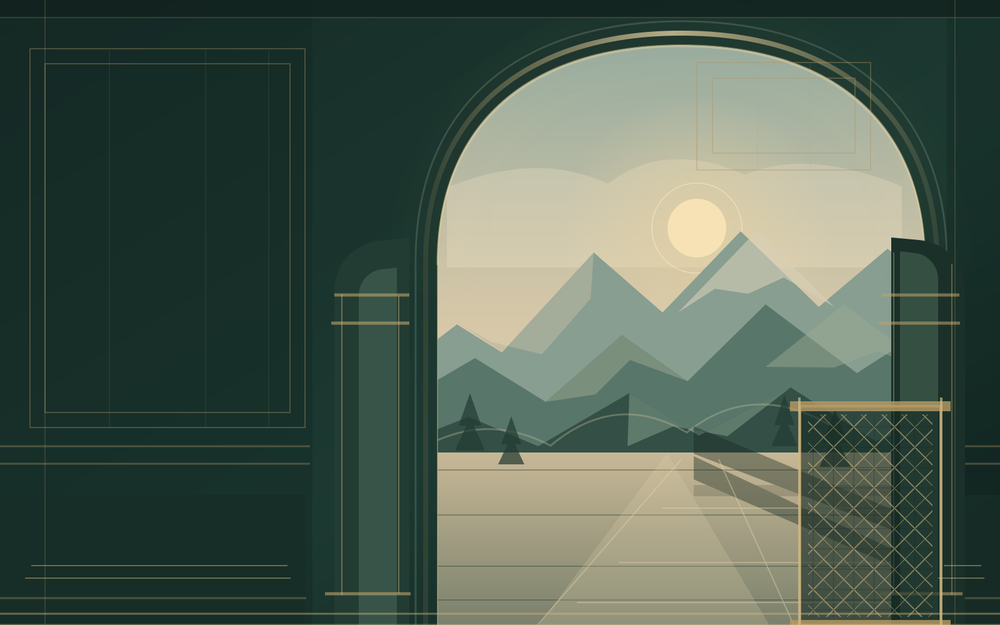

Home / Community
Faith. Learning.
Community.
An interactive guide to community life, programs, learning, and visiting, using the verified information we have.

JAFFERY CENTER OF ROANOKE
A place to belong.
Faith · learning · communityWelcome to a community
Welcome to a community
that grows together.
Jaffery Center is a welcoming Shia Muslim community in Roanoke. Explore programs, learning for children, or plan a visit.
Our storyCome togetherPrograms & gatheringsFaith, learning, and family across the year.↗For young learnersSunday SchoolQur’an, Arabic reading, and Islamic studies.↗Find your wayVisit the center3031 Preston Avenue, Roanoke, Virginia.↗
Looking for a current schedule? Program dates and times are shared as they’re confirmed. Contact the center for the latest information.